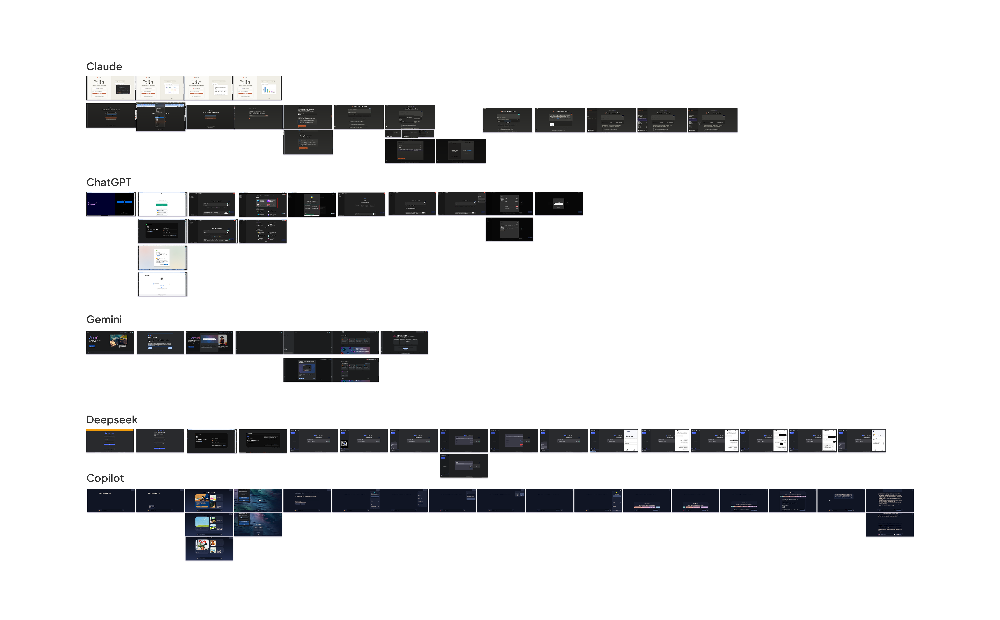
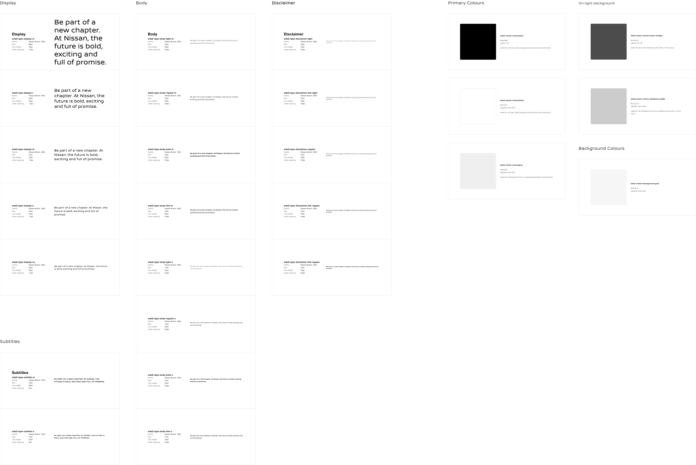

Selected Work
End-to-end design process — from discovery and research to final delivery.
AI Chatbot · App Maintenance
Context
Nissan is one of the biggest Japanese car manufacturers. Their family of automobiles includes brands like Infiniti, Datsun and different tuning products under the label Nismo. It also has a strong presence in Latin America, a car market that is growing exponentially and represents a great business opportunity.
Challenge
Nissan Latam is in search of a way to optimize their internal process of quote and requesting autoparts from providers.
Goal
Develop a platform enhanced with A.I. that automates the search for autoparts and stores, and registers all of this information in a database.
Project Overview
Nissan is one of the biggest Japanese car manufacturers. Their family of automobiles includes brands like Infiniti, Datsun and different tuning products under the label Nismo. It also has a strong presence in Latin America, a car market that is growing exponentially and represents a great business opportunity.
Nissan Latam is in search of a way to optimize their internal process of quote and requesting autoparts from providers.
Develop a platform enhanced with A.I. that automates the search for autoparts and stores, and registers all of this information in a database.
This first version implements in its core an advanced artificial intelligence. This A.I. is enabled for live interaction via chat and offers precise answers to user requests and an extra feature: capacity to upload and process documents and data.
The design and programming team have also taken a close look at the possible interactions of A.I. and humans to ensure this product's safety. There are established limits for what information can be retrieved, what requests are acceptable and how to handle the user's frustrations in what-if scenarios.
Design Process
We audited the most used AI tools on the market to map design patterns and interactions that would be useful for our new product.

To improve the experience and following the good practices guidelines regarding AI-interaction, we included the following aspects in this product.
Frustration scenarios for the user and the type of communication used were taken into account.
Warnings and limitations were included regarding the content the chatbot can generate.
Users were given the ability to edit and add different AI agents according to their needs.
Se exploraron diferentes casuísticas: Registro, búsqueda de archivos, añadir archivos, creación de Agentes IA.
Para la creación posterior de las variables se tomó en cuenta las guías de estilo utilizadas en wds2 por Nissan. Se analizó y registró los distintos usos de las tipografías y colores.

Design System
A complete token-based system built in Figma — color, typography, spacing, and component variables that scale across 6 language variants and keep the platform visually consistent end-to-end.
The implementation of variables in the design made it possible to adapt components quickly for both day and night modes.
Final Output
A selection of final screens from the platform — showcasing the AI chatbot interactions, autoparts search, and the core maintenance flows delivered to users.